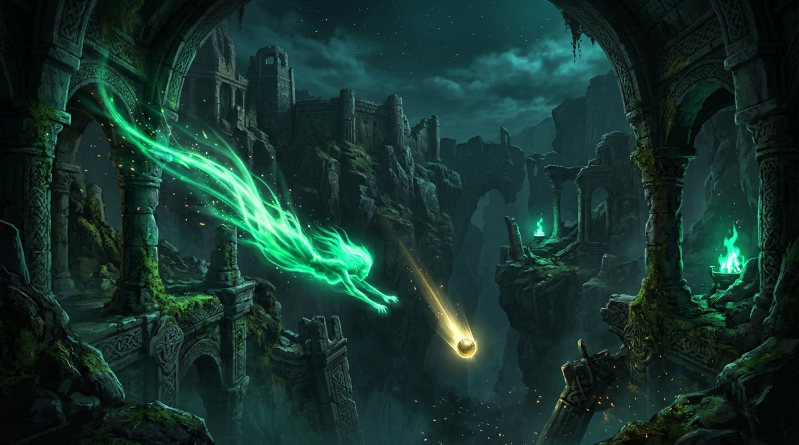
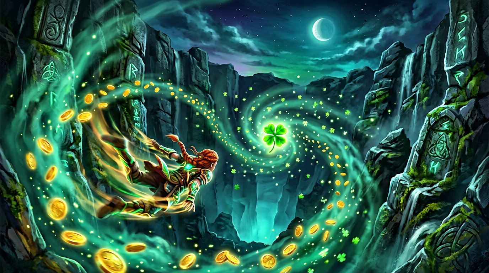

Endless descent
The chasm assembles itself around you as you fall — fresh ruins, fresh gaps, fresh doom. No two runs are ever the same.
An endless, dark descent into the Emerald Abyss. Dodge the ruins of a drowned kingdom, gather cursed gold, and find out what waits at the bottom of Ireland’s oldest legend.


When the mist over the Burren refused to lift, the old stories say the ground split into a bottomless chasm — and every soul who wandered too close was pulled down into the darkness beneath Ireland. They never climbed back out. They only ever fell deeper.
You are the last of the lost: a sliver of golden light, tumbling toward the heart of the myth. Irish Fall is a hypnotic, physics-driven endless faller. Weave through the ruins of a drowned kingdom, thread the gaps between broken cairns, scoop up cursed gold and outrun the banshees that hear you coming.
How deep can you go before the dark wins?
Six reasons the chasm is hard to leave — once you’re in it.
The chasm assembles itself around you as you fall — fresh ruins, fresh gaps, fresh doom. No two runs are ever the same.
Broken cairns, moss-eaten arches and green banshee wisps that wake the moment they hear you falling through the fog.
Scoop up cursed gold for points, and snatch the rare four-leaf clover for a shield that forgives one fatal mistake.
Arrow keys, A/D, or a finger on touch screens — gentle acceleration tuned to feel like drifting on the wind, not crashing.
Pure HTML5 canvas and vanilla JavaScript. No install, no account, no launcher. Desktop, tablet and phone.
A druid-in-a-chip synth soundtrack generated live, and the whole demo is open source on GitHub.
Concept stills from the endless descent — click any frame to enlarge.
Steer with ← → / A D — or drag with your mouse / finger. Weave through the gaps, grab gold, dodge the banshees. The deeper you fall, the faster the world rushes past.
Pick the path that suits you — it is the same demo everywhere.
Available now
The full demo is already running on this page — scroll up, press start, and fall. Nothing to download, nothing to install.
Jump to the demo1 file · everything included
A single .html file with the entire demo inside. Download it once, double-click it anywhere — even with no internet.
MIT-style · free forever
Fork the physics, poke at the difficulty curve, or use the whole thing as a base for your own endless game. Built with zero dependencies.
View on GitHubCompatible with Windows · macOS · Linux · Android · iOS — anywhere a modern browser runs. Built with HTML5 Canvas + vanilla JavaScript. No tracking, no telemetry, no account.